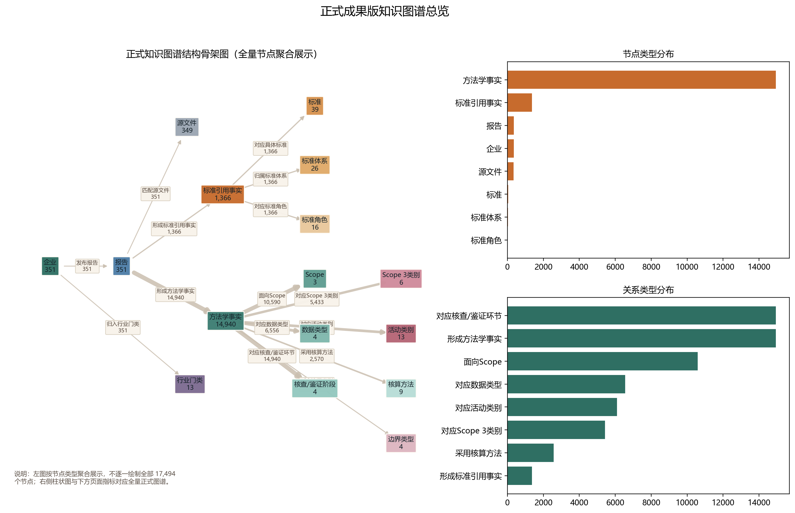

状态口径摘要
当前 351 家企业已进入正式成果图谱，149 家暂未纳入；其中绝大部分原因是语料库内缺少可安全归属母公司的正式主报告。
已进入正式成果图谱351
暂未纳入正式图谱149
我基于世界500强企业公开年报、可持续发展报告与碳相关披露文件，构建了这套 ESG 知识图谱展示站点。当前公开页以 351 家已发布企业为正式成果口径，另有 147 家因缺母公司主报告或仍待复核，暂未进入正式版主图谱。
首页主图区已按需求方原始表述重排为标准分层链条、Scope 与直接/间接排放、排放方法与数据质量、活动类别、行业归类和技术聚类展示，当前页面仅保留正式成果内容。
识别企业遵循的是 GHG、ISO、GB/T、GRI、TCFD、IFRS S2、ESRS/CSRD 等哪一类体系，并细化到 standard、guideline、principle、核查/鉴证标准、目标审定指引等角色。
识别初级数据、次级数据、估算/推导、报告披露、核查、鉴证、审定，以及固定源、移动源、散逸性排放、过程排放、外购电力与 Scope 3 类别等方法学信息。
这里按最终公开口径汇总 500 家世界500强企业当前是否已经纳入正式知识图谱，以及暂未纳入的主要原因，合计严格闭合到 500 家。
当前 351 家企业已进入正式成果图谱，149 家暂未纳入；其中绝大部分原因是语料库内缺少可安全归属母公司的正式主报告。
暂未纳入正式图谱的主要原因不是简单别名问题，而是当前语料库内没有可安全归属母公司的正式主报告。
| 一级状态 | 二级状态 | 企业数 | 占 500 家比例 | 状态说明 |
|---|---|---|---|---|
| 正式成果 | 已进入正式成果图谱 | 351 | 70.2% | 已完成报告匹配、页级抽取、证据挖掘和正式图谱入图。 |
| 暂未纳入正式图谱 | 库内无母公司主报告 | 141 | 28.2% | 当前语料库内未发现可安全归属母公司的正式主报告文件。 |
| 暂未纳入正式图谱 | 仅发现子公司/关联主体文件 | 6 | 1.2% | 仅有子公司或关联经营主体材料，不能替代母公司主报告。 |
| 暂未纳入正式图谱 | 人工判定驳回匹配 | 2 | 0.4% | 当前候选文件不能安全匹配到母公司主报告。 |
| 合计 | 500 | 100.0% | 500 家世界500强正式推进对象。 |
这里展示正式知识图谱的结构骨架图与全量统计，不再使用难以阅读的密集节点云。图谱把企业、报告、标准、活动类别、Scope、数据质量方法和行业门类连接在同一套关系结构中。

| 节点类型 | 数量 |
|---|---|
| 方法学事实 | 14940 |
| 标准引用事实 | 1366 |
| 企业 | 351 |
| 报告 | 351 |
| 源文件 | 349 |
| 标准 | 39 |
| 标准体系 | 26 |
| 标准角色 | 16 |
| 关系类型 | 数量 |
|---|---|
| 形成方法学事实 | 14940 |
| 对应核查/鉴证环节 | 14940 |
| 面向Scope | 10590 |
| 对应数据类型 | 6556 |
| 对应活动类别 | 6096 |
| 对应Scope 3类别 | 5433 |
| 采用核算方法 | 2570 |
| 形成标准引用事实 | 1366 |
以下 6 张主图已统一改成正式汇报提纲口径，按“标准与准则主轴、排放边界主轴、方法与数据质量主轴、活动与行业主轴、技术路径主轴”依次展开。当前 351 家已进入正式成果，500 家总体完成边界见上方状态总分布模块。

| 层级角色 | 标准体系 | 事实条数 | 涉及企业数 |
|---|---|---|---|
| 先看核算主体系 | GHG核算体系 | 269 | 229 |
| 先看核算主体系 | ISO体系 | 81 | 69 |
| 先看核算主体系 | GB/国标体系 | 14 | 10 |
| 再看配套披露/目标框架 | 气候披露与目标框架 | 572 | 286 |
| 再看配套披露/目标框架 | ESG披露框架 | 418 | 273 |
| 补充标准/指引 | 其他标准/指引 | 12 | 8 |

| 标准体系 | 具体标准 | 角色 | 原则样例 | 事实条数 | 涉及企业数 |
|---|---|---|---|---|---|
| GHG核算体系 | GHG Protocol | 核算标准 | 相关性 | 完整性 | 221 | 221 |
| GHG核算体系 | PCAF | 核算标准 | 归因原则 | 数据质量层级 | 47 | 47 |
| GHG核算体系 | 温室气体核算体系（GHG Protocol） | 核算标准 | 相关性 | 完整性 | 1 | 1 |
| ISO体系 | ISO 14064 | 指引 | 40 | 40 | |
| ISO体系 | ISO 14064-3 | 核查与鉴证标准 | 可核查性 | 可信性 | 20 | 20 |
| ISO体系 | ISO 14067 | 方法学标准 | 生命周期视角 | 16 | 16 |
| GB/国标体系 | GB/T 2589-2020 | 计量标准 | 标准化计量 | 3 | 3 |
| GB/国标体系 | GB/T 36001-2015 | 指引 | 3 | 3 | |
| GB/国标体系 | GB/T 23331-2020 | 指引 | 1 | 1 |

| Scope | 排放类型 | 事实条数 | 涉及企业数 |
|---|---|---|---|
| 范围1 | 直接排放 | 3575 | 272 |
| 范围2 | 能源间接排放 | 2035 | 246 |
| 范围3 | 其他间接排放 | 4980 | 266 |

| 维度 | 类别 | 事实条数 | 涉及企业数 |
|---|---|---|---|
| 数据来源类型 | 估算数据 | 3675 | 255 |
| 数据来源类型 | 推导数据 | 1067 | 186 |
| 数据来源类型 | 次级数据 | 1014 | 163 |
| 数据来源类型 | 初级数据 | 800 | 145 |
| 核查/鉴证/审定 | 报告披露 | 13040 | 310 |
| 核查/鉴证/审定 | 鉴证 | 1001 | 208 |
| 核查/鉴证/审定 | 核查 | 605 | 155 |
| 核查/鉴证/审定 | 审定 | 294 | 76 |
| 计算方法 | 市场法 | 1562 | 148 |
| 计算方法 | 位置法 | 373 | 59 |

对应需求方原始表述的阅读顺序：先识别固定排放源、移动排放源、散逸性排放和过程排放，再下钻 Scope 3 类别，最后按 GB/T 4754-2017 国民经济行业门类进行横向比较。
| 维度 | 类别 | 事实条数/统计值 | 涉及企业数 |
|---|---|---|---|
| 重点前置活动类别 | 固定排放源 | 161 | 78 |
| 重点前置活动类别 | 移动排放源 | 423 | 143 |
| 重点前置活动类别 | 散逸性排放 | 569 | 148 |
| 重点前置活动类别 | 过程排放 | 356 | 146 |
| 其他活动类别 | 价值链活动 | 2758 | 261 |
| 其他活动类别 | 商务差旅 | 481 | 123 |
| 其他活动类别 | 投融资排放 | 447 | 41 |
| 其他活动类别 | 外购电力 | 376 | 116 |
| Scope 3类别 | 类别15 投资 | 1539 | 157 |
| Scope 3类别 | 类别1 购买的商品和服务 | 1329 | 167 |
| Scope 3类别 | 类别6 商务差旅 | 1111 | 126 |
| Scope 3类别 | 类别11 销售产品的使用 | 623 | 104 |

| 技术聚类 | 覆盖企业数 | 证据命中数 | 样例企业 |
|---|---|---|---|
| 可再生电力与绿电采购 | 329 | 3990 | 法国电力公司、Engie集团、意大利国家电力公司、埃尼石油公司、壳牌公司、Equinor公司 |
| 循环利用与回收 | 311 | 4371 | 日本钢铁工程控股公司、CRH公司、大众公司、联合信贷集团、西班牙对外银行、奥地利石油天然气集团 |
| 电动化运输 | 252 | 1442 | 福特汽车公司、印度塔塔汽车公司、现代汽车、壳牌公司、大众公司、通用汽车公司 |
| 电池与储能 | 207 | 995 | 福特汽车公司、Engie集团、丰田汽车公司、宁德时代新能源科技股份有限公司、现代汽车、沃尔沃集团 |
| 低碳燃料 | 197 | 840 | 壳牌公司、Engie集团、波兰国营石油公司、道达尔能源公司、联合航空控股公司、汉莎集团 |
| 氢能与甲醇 | 186 | 1008 | 壳牌公司、Engie集团、波兰国营石油公司、奥地利石油天然气集团、日本钢铁工程控股公司、韩国天然气公司 |
| 碳管理与碳移除 | 169 | 640 | 联合信贷集团、奥地利石油天然气集团、英国劳埃德银行集团、壳牌公司、埃尼石油公司、Equinor公司 |
| 低碳材料 | 153 | 456 | 日本钢铁工程控股公司、CRH公司、日本制铁集团公司、安赛乐米塔尔、德意志银行、法国电力公司 |
标准本体与标准引用事实分开建模，保证同一标准在不同企业报告中可以承担不同角色。
排放数值事实与排放方法事实分开建模，使同一 Scope 记录可以同时连接数据来源、核查环节、活动类别与计算方法。
行业分类采用 GB/T 4754-2017 门类层级，便于后续跨企业与跨行业对比。
活动类别区分“原文明确提及”与“基于证据规则映射”两个阶段，便于后续人工校核与二次入库闭环。